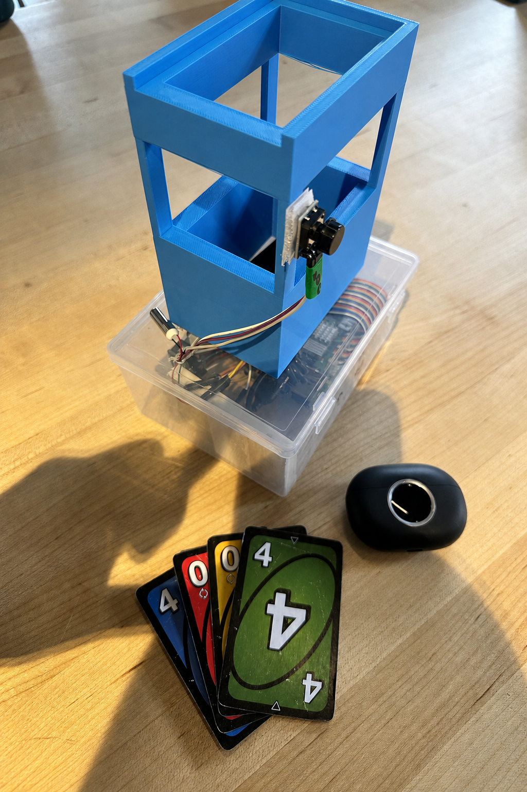
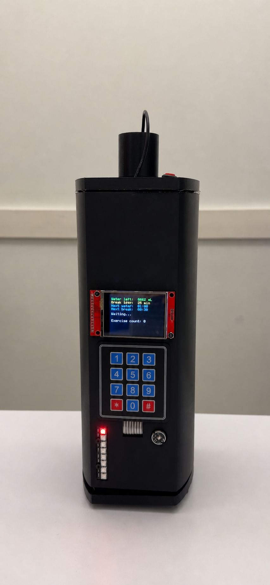

SELECTED WORK
Ideas, made real.
Explorations in accessible technology, connected devices,
and software that makes everyday life a little better.

01ACCESSIBLE TECHNOLOGY
BUNO
An accessible tabletop card-game system that combines custom 3D-printed hardware, computer vision, and dual-button controls to scan and track cards. Private audio and haptic feedback help visually impaired players play independently.
Computer vision3D printingAccessibility

02EMBEDDED SYSTEMS / IOT
Smart Hydration & Break Reminder
An ESP32-S3 IoT device that calculates personalized water-intake targets, tracks sedentary periods, and provides hydration and break alerts through a TFT display and NeoPixel lights. It also synchronizes data with a remote web dashboard.
ESP32-S3IoTEmbedded systems